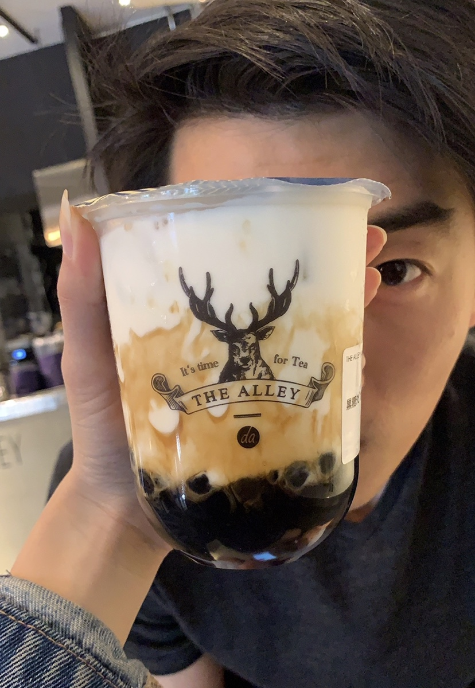
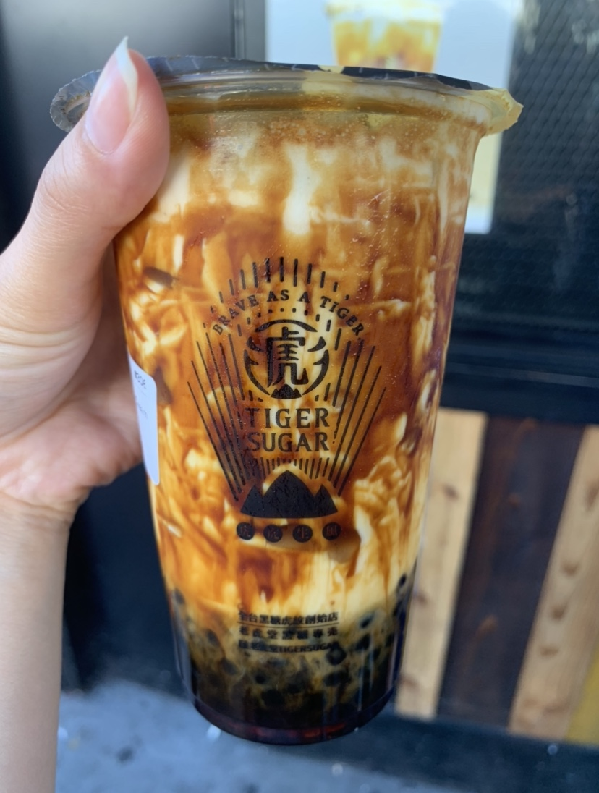

If you know me, you know one of my favorite past times is going out with friends to pick up some bubble tea! I have a pretty bad sweet tooth (which I’m trying to work on cutting back lol) but I’ve had my fair share of ~*amaziiing*~ bubble tea.
Based on living in the city for the past year, here are my top three bubble tea shops in NYC!
1. The Alley (East Village)
The first time I had The Alley was in Tokyo, we didn’t have one in Philly so I never had the chance to try it in the states until I moved to NYC. My favorite drinks are the Orange Lulu and the Brown Sugar Deerioca Creme Brulee Milk (but be warned this has more than 1300 calories for one drink LOL). If you want a thicc, creamy bubble tea, this is for you! It’s hella sweet (which I love heh) and they put creme brulee directly into your drink with brown sugar boba.
 Brown Sugar Deerioca Creme Brulee Milk from The AlleyThe Orange Lulu is super refreshing and I crave it everytime the weather starts getting hot lol. It reminds me of summertime and the sweetness level is just right. And I know it sounds kinda sour or tart but trust me, you can taste the orange flavor but it’s not bitter at all, plus it comes with nata jelly!
2. Gongcha (Midtown)
My second favorite bubble tea joint in NYC has multiple locations but I usually go to the one in K-town near 33rd street (midtown). The place is pretty small and there’s a line out the door on nice days so I would keep that in mind. They are super fast at making drinks and getting you out of the store once you’ve ordered though, my favorite drink is Mango Green Tea with white boba!
 Mango Green Tea from Gongcha
Mango Green Tea from Gongcha
I really like it because it actually has small pieces of mango chunks and this is also the only bubble tea shop I know that serves white bubbles. If you haven’t had white boba before, it’s basically just like other boba except when you bite it, it’s not chewy, it’s more like nata jelly (sort of). I can’t really find the words to explain it so I guess you’ll have to find out yourself! :D
3. Tiger Sugar (Flushing)
There’s always been hype around Tiger Sugar and whether or not it’s worth it to wait in the occasional 2-hour lines just to get a freakin’ bubble tea and let me tell you: it’s worth it as long as you’re only waiting in line for about half an hour or so (if you’re a local it’s probably okay to wait longer but if you’re a tourist, I’d assume you have actual things you want to do rather than wait in a super long line, unless you came to NYC for bubble team, which is also understandable lol).
 Brown Sugar Milk from Tiger SugarI’ve only had Tiger Sugar once because I worried about the long lines (I waited about 45-minutes but the workers are nice enough to give you umbrellas while you wait in the sun or rain uwu). The boba was really good and you could tell they were fresh, they’re constantly busy so I can definitely assume they’re always making new boba lol. The drink itself isn’t as sweet as similar drinks from The Alley but it’s still really delicious! They coat the entire cup in brown sugar and it just looks really aesthetic tbh LOL.
That’s it for my boba review, I wish NYC had a Mr. Wish or a Bambu (both can be found in Philly) but I’ll save that for my list of best bubble tea shops in Philly!